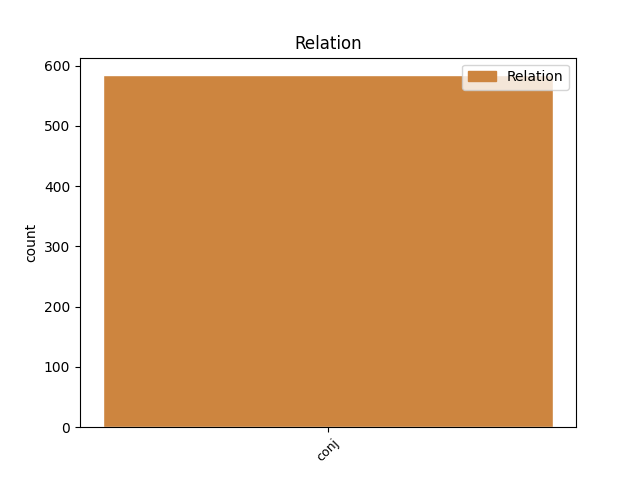
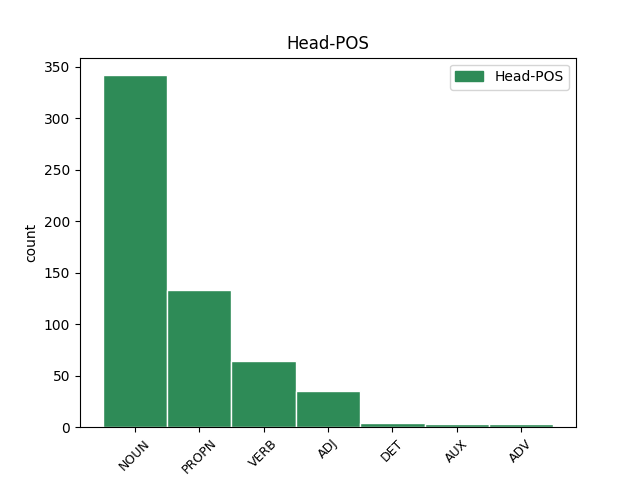
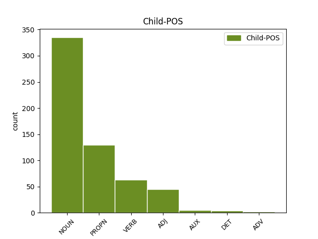

Distribution of features within this leaf



Agreement Rules sorted by frequency.
- When the dependent token is the conjunct(conj) of the head token, and the dependent token is NOUN.
1 Oso _ _ _ _ 0 _ _ _
2 nahasi _ _ _ _ 0 _ _ _
3 ari _ _ _ _ 0 _ _ _
4 gara _ _ _ _ 0 _ _ _
5 jokatzen _ _ _ _ 0 _ _ _
6 , _ _ _ _ 0 _ _ _
7 eta _ _ _ _ 0 _ _ _
8 sasoian sasoi NOUN _ Animacy=Inan|Case=Ine|Definite=Def|Number=Sing 0 _ _ _
9 , _ _ _ _ 0 _ _ _
10 taktikan taktika NOUN _ Animacy=Inan|Case=Ine|Definite=Def|Number=Sing 8 conj _ _
11 eta _ _ _ _ 0 _ _ _
12 animoz _ _ _ _ 0 _ _ _
13 hobetu _ _ _ _ 0 _ _ _
14 behar _ _ _ _ 0 _ _ _
15 dugu _ _ _ _ 0 _ _ _
16 . _ _ _ _ 0 _ _ _
1 Boteroren _ _ _ _ 0 _ _ _
2 ( _ _ _ _ 0 _ _ _
3 Kelme _ _ _ _ 0 _ _ _
4 ) _ _ _ _ 0 _ _ _
5 , _ _ _ _ 0 _ _ _
6 Desselen Dessel PROPN _ Case=Gen|Definite=Def|Number=Sing 0 _ _ _
7 ( _ _ _ _ 0 _ _ _
8 Jean _ _ _ _ 0 _ _ _
9 Delatour _ _ _ _ 0 _ _ _
10 ) _ _ _ _ 0 _ _ _
11 eta _ _ _ _ 0 _ _ _
12 Mariniren Marini PROPN _ Case=Gen|Definite=Def|Number=Sing 6 conj _ _
13 ( _ _ _ _ 0 _ _ _
14 Liquigas _ _ _ _ 0 _ _ _
15 ) _ _ _ _ 0 _ _ _
16 ahalegina _ _ _ _ 0 _ _ _
17 izan _ _ _ _ 0 _ _ _
18 zen _ _ _ _ 0 _ _ _
19 balekoa _ _ _ _ 0 _ _ _
20 . _ _ _ _ 0 _ _ _
1 Benetan _ _ _ _ 0 _ _ _
2 esplikaezina _ _ _ _ 0 _ _ _
3 da _ _ _ _ 0 _ _ _
4 halako _ _ _ _ 0 _ _ _
5 egoerak _ _ _ _ 0 _ _ _
6 ez _ _ _ _ 0 _ _ _
7 aurreikustea aurreikusi VERB _ Case=Abs 0 _ _ _
8 eta _ _ _ _ 0 _ _ _
9 erantzukizuna _ _ _ _ 0 _ _ _
10 duten _ _ _ _ 0 _ _ _
11 agintarien _ _ _ _ 0 _ _ _
12 gainbegiraketarik _ _ _ _ 0 _ _ _
13 ez _ _ _ _ 0 _ _ _
14 izatea izan VERB _ Case=Abs 7 conj _ SpaceAfter=No
15 , _ _ _ _ 0 _ _ _
16 gerta _ _ _ _ 0 _ _ _
17 daitezkeenak _ _ _ _ 0 _ _ _
18 planifikatu _ _ _ _ 0 _ _ _
19 eta _ _ _ _ 0 _ _ _
20 aurreikuste _ _ _ _ 0 _ _ _
21 aldera _ _ _ _ 0 _ _ _
22 . _ _ _ _ 0 _ _ _
1 Egunotan _ _ _ _ 0 _ _ _
2 ari _ _ _ _ 0 _ _ _
3 dira _ _ _ _ 0 _ _ _
4 eztabaidatzen _ _ _ _ 0 _ _ _
5 Ukrainako _ _ _ _ 0 _ _ _
6 parlamentuan _ _ _ _ 0 _ _ _
7 Txernobilgo _ _ _ _ 0 _ _ _
8 zentral _ _ _ _ 0 _ _ _
9 nuklearraren _ _ _ _ 0 _ _ _
10 itxiera _ _ _ _ 0 _ _ _
11 eta _ _ _ _ 0 _ _ _
12 herenegun _ _ _ _ 0 _ _ _
13 Leonid _ _ _ _ 0 _ _ _
14 Kuchna _ _ _ _ 0 _ _ _
15 presidenteak _ _ _ _ 0 _ _ _
16 esan _ _ _ _ 0 _ _ _
17 zuenez _ _ _ _ 0 _ _ _
18 , _ _ _ _ 0 _ _ _
19 « _ _ _ _ 0 _ _ _
20 Txernobil _ _ _ _ 0 _ _ _
21 ixteak _ _ _ _ 0 _ _ _
22 sortuko _ _ _ _ 0 _ _ _
23 dituen _ _ _ _ 0 _ _ _
24 finantza _ _ _ _ 0 _ _ _
25 arazoak _ _ _ _ 0 _ _ _
26 eta _ _ _ _ 0 _ _ _
27 sozialak _ _ _ _ 0 _ _ _
28 gizateria _ _ _ _ 0 _ _ _
29 guztiari _ _ _ _ 0 _ _ _
30 dagozkio _ _ _ _ 0 _ _ _
31 eta _ _ _ _ 0 _ _ _
32 Ukrainak _ _ _ _ 0 _ _ _
33 eskubide _ _ _ _ 0 _ _ _
34 osoa _ _ _ _ 0 _ _ _
35 du _ _ _ _ 0 _ _ _
36 laguntza _ _ _ _ 0 _ _ _
37 teknikoa tekniko ADJ _ Case=Abs|Definite=Def|Number=Sing 0 _ _ _
38 eta _ _ _ _ 0 _ _ _
39 ekonomikoa ekonomiko ADJ _ Case=Abs|Definite=Def|Number=Sing 37 conj _ _
40 eskatzeko _ _ _ _ 0 _ _ _
41 . _ _ _ _ 0 _ _ _
1 sakon-sakonean _ _ _ _ 0 _ _ _
2 , _ _ _ _ 0 _ _ _
3 jendearen _ _ _ _ 0 _ _ _
4 morboa _ _ _ _ 0 _ _ _
5 zegoen _ _ _ _ 0 _ _ _
6 nagusi _ _ _ _ 0 _ _ _
7 ; _ _ _ _ 0 _ _ _
8 gu _ _ _ _ 0 _ _ _
9 modan _ _ _ _ 0 _ _ _
10 jarri _ _ _ _ 0 _ _ _
11 ginen _ _ _ _ 0 _ _ _
12 Abdullah _ _ _ _ 0 _ _ _
13 eta _ _ _ _ 0 _ _ _
14 Macarena _ _ _ _ 0 _ _ _
15 Brown _ _ _ _ 0 _ _ _
16 hil _ _ _ _ 0 _ _ _
17 ziren _ _ _ _ 0 _ _ _
18 arrazoi _ _ _ _ 0 _ _ _
19 berberagatik _ _ _ _ 0 _ _ _
20 , _ _ _ _ 0 _ _ _
21 Xuci _ _ _ _ 0 _ _ _
22 gertatu _ _ _ _ 0 _ _ _
23 zitzaionagatik izan AUX _ Case=Cau|Definite=Def|Mood=Ind|Number=Sing|Number[abs]=Sing|Number[dat]=Sing|Person[abs]=3|Person[dat]=3 0 _ _ _
24 , _ _ _ _ 0 _ _ _
25 herri _ _ _ _ 0 _ _ _
26 hartatik _ _ _ _ 0 _ _ _
27 hanka _ _ _ _ 0 _ _ _
28 egitera _ _ _ _ 0 _ _ _
29 bultzatu _ _ _ _ 0 _ _ _
30 gintuenagatik *edun AUX _ Case=Cau|Definite=Def|Mood=Ind|Number=Sing|Number[abs]=Plur|Number[erg]=Sing|Person[abs]=1|Person[erg]=3 23 conj _ SpaceAfter=No
31 . _ _ _ _ 0 _ _ _
1 Adibidez _ _ _ _ 0 _ _ _
2 , _ _ _ _ 0 _ _ _
3 Bermeon _ _ _ _ 0 _ _ _
4 GIBdunak _ _ _ _ 0 _ _ _
5 eta _ _ _ _ 0 _ _ _
6 gaisoak gaixo NOUN _ Case=Abs|Definite=Def|Number=Plur 0 _ _ _
7 eta _ _ _ _ 0 _ _ _
8 denok dena DET _ Case=Abs|Definite=Def|Number=Plur 6 conj _ _
9 elkartu _ _ _ _ 0 _ _ _
10 egiten _ _ _ _ 0 _ _ _
11 gara _ _ _ _ 0 _ _ _
12 sarritan _ _ _ _ 0 _ _ _
13 . _ _ _ _ 0 _ _ _
1 Horrez _ _ _ _ 0 _ _ _
2 gain _ _ _ _ 0 _ _ _
3 , _ _ _ _ 0 _ _ _
4 herritarren _ _ _ _ 0 _ _ _
5 bizimaila _ _ _ _ 0 _ _ _
6 hobetzeko _ _ _ _ 0 _ _ _
7 hango han ADV _ Case=Loc 0 _ _ _
8 eta _ _ _ _ 0 _ _ _
9 hemengo hemen ADV _ Case=Loc 7 conj _ _
10 herrien _ _ _ _ 0 _ _ _
11 arteko _ _ _ _ 0 _ _ _
12 lankidetza _ _ _ _ 0 _ _ _
13 posible _ _ _ _ 0 _ _ _
14 eta _ _ _ _ 0 _ _ _
15 onuragarria _ _ _ _ 0 _ _ _
16 dela _ _ _ _ 0 _ _ _
17 agerian _ _ _ _ 0 _ _ _
18 uzteko _ _ _ _ 0 _ _ _
19 asmoa _ _ _ _ 0 _ _ _
20 du _ _ _ _ 0 _ _ _
21 . _ _ _ _ 0 _ _ _
Disagree Examples:
1 Cavallo _ _ _ _ 0 _ _ _
2 auzipetu _ _ _ _ 0 _ _ _
3 du _ _ _ _ 0 _ _ _
4 Baltasar _ _ _ _ 0 _ _ _
5 Garzon _ _ _ _ 0 _ _ _
6 epaile _ _ _ _ 0 _ _ _
7 espainiarrak _ _ _ _ 0 _ _ _
8 " _ _ _ _ 0 _ _ _
9 genozidioa _ _ _ _ 0 _ _ _
10 , _ _ _ _ 0 _ _ _
11 torturak tortura NOUN _ Case=Abs|Definite=Def|Number=Plur 0 _ _ _
12 eta _ _ _ _ 0 _ _ _
13 terrorismoagatik terrorismo NOUN _ Case=Cau|Definite=Def|Number=Sing 11 conj _ SpaceAfter=No
14 " _ _ _ _ 0 _ _ _
15 . _ _ _ _ 0 _ _ _
1 Azken _ _ _ _ 0 _ _ _
2 tantoa _ _ _ _ 0 _ _ _
3 Rairen _ _ _ _ 0 _ _ _
4 huts _ _ _ _ 0 _ _ _
5 garbi _ _ _ _ 0 _ _ _
6 batek _ _ _ _ 0 _ _ _
7 erabaki _ _ _ _ 0 _ _ _
8 zuen _ _ _ _ 0 _ _ _
9 , _ _ _ _ 0 _ _ _
10 eta _ _ _ _ 0 _ _ _
11 garaipena _ _ _ _ 0 _ _ _
12 Tirapu Tirapu PROPN _ Case=Abs|Definite=Def|Number=Sing 0 _ _ _
13 eta _ _ _ _ 0 _ _ _
14 Errandoneari Errandonea PROPN _ Case=Dat|Definite=Def|Number=Sing 12 conj _ _
15 eman _ _ _ _ 0 _ _ _
16 zien _ _ _ _ 0 _ _ _
17 . _ _ _ _ 0 _ _ _
1 Red _ _ _ _ 0 _ _ _
2 Globalia _ _ _ _ 0 _ _ _
3 zerbitzu _ _ _ _ 0 _ _ _
4 sarea _ _ _ _ 0 _ _ _
5 sortu _ _ _ _ 0 _ _ _
6 da _ _ _ _ 0 _ _ _
7 Hego _ _ _ _ 0 _ _ _
8 Euskal _ _ _ _ 0 _ _ _
9 Herrian _ _ _ _ 0 _ _ _
10 , _ _ _ _ 0 _ _ _
11 Katalunian Katalunia PROPN _ Case=Ine|Definite=Def|Number=Sing 0 _ _ _
12 eta _ _ _ _ 0 _ _ _
13 Madrilen Madril PROPN _ Case=Abs|Definite=Ind|Number=Sing 11 conj _ SpaceAfter=No
14 . _ _ _ _ 0 _ _ _
1 Entrenatzaileak _ _ _ _ 0 _ _ _
2 atsedena _ _ _ _ 0 _ _ _
3 eman _ _ _ _ 0 _ _ _
4 die _ _ _ _ 0 _ _ _
5 jokalariei _ _ _ _ 0 _ _ _
6 gaurko gaur ADV _ Case=Loc 0 _ _ _
7 eta _ _ _ _ 0 _ _ _
8 biharko bihar ADV _ Case=Abs|Definite=Ind 6 conj _ SpaceAfter=No
9 . _ _ _ _ 0 _ _ _
1 Europako _ _ _ _ 0 _ _ _
2 Batasuneko _ _ _ _ 0 _ _ _
3 kideen kide NOUN _ Case=Gen|Definite=Def|Number=Plur 0 _ _ _
4 eta _ _ _ _ 0 _ _ _
5 eskubideen _ _ _ _ 0 _ _ _
6 agiriaren _ _ _ _ 0 _ _ _
7 « _ _ _ _ 0 _ _ _
8 printzipio _ _ _ _ 0 _ _ _
9 demokratikoen _ _ _ _ 0 _ _ _
10 aurkakoak aurkako NOUN _ Case=Abs|Definite=Def|Number=Plur 3 conj _ SpaceAfter=No
11 » _ _ _ _ 0 _ _ _
12 zirela _ _ _ _ 0 _ _ _
13 nabarmendu _ _ _ _ 0 _ _ _
14 zuen _ _ _ _ 0 _ _ _
15 Chiracek _ _ _ _ 0 _ _ _
16 . _ _ _ _ 0 _ _ _